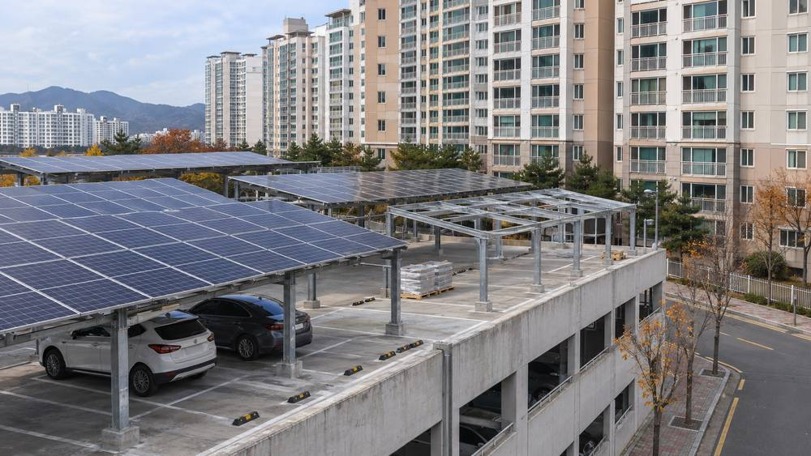

울주군 구영공원 주차장 태양광 11월 17일 착공 예정, 20m 앞 아파트 주민은 철회 요구

군은 반사율 5.3% 패널과 기울기 9도를 내세우고, 주민은 일부 패널 제외와 방현 유리 적용을 요구
울산 울주군이 11월 17일 범서읍 구영공원 공영주차장과 대리 공영주차장에서 태양광 그늘막 공사를 시작하기로 하자, 길 건너 한신아파트 입주자대표회가 빛 반사를 우려하며 착공 보류와 계획 철회를 요구하고 있다. 국가·지방자치단체·공공기관이 운영하는 주차장 가운데 주차구획 면적이 1,000㎡ 이상이면 「재생에너지 개발·이용·보급 촉진법」에 따라 면적 10㎡당 1kW 이상의 재생에너지 설비를 설치해야 하고, 군 사업은 이 의무화에 맞춘 것이다.
군은 올해 1월 기본설계를 마치고 6월 주민설명회를 연 뒤 발전사업허가와 개발행위허가를 받았으며, 반사율 5.3%(일반 유리는 8%)에 기울기 9도인 패널을 아파트 반대쪽인 남향과 동향으로 놓는다고 설명했다.
입주자대표회는 주차장이 아파트에서 약 20m 떨어져 있어 아침 햇빛이 거실로 반사될 수 있다고 주장하며, 철회가 어려우면 일부 패널을 빼고 방현 유리(빛을 흩어 반사광을 줄이는 유리) 모듈을 쓰라고 요구했다. 군은 계획 변경이 어렵다면서도 설치 뒤 반사가 확인되면 그 패널을 덮어 쓰지 못하게 하겠다고 밝혔다. 대표회가 기준으로 든 도시계획 조례 개정안은 태양광 설비를 주택에서 200m 이상 떨어뜨리는 내용이며, 군은 이 안이 이번 사업에 적용되지 않는다고 설명한다. 군은 이 개정안을 10월 15일 입법예고했다.
출처: 울산매일 2026-11-16 신섬미 원문 보기
출처: 한국에너지공단 재생에너지센터 2026-11-18 공영주차장 재생e 설비 설치의무화제도 안내 원문 보기